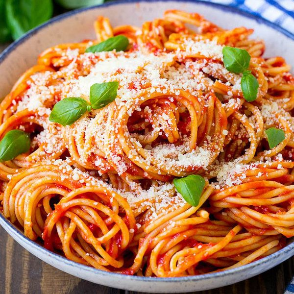

Pasta Pomodoro

Description
If someone asked the average person what image springs to mind with the words “Italian food,” you would likely picture a bowl of spaghetti with tomato sauce. The most famous Italian recipe, lo spaghetto al pomodoro is made with just a few simple ingredients, tastes delicious, and is easy to make.
Ingredients
- 1 package of Spaghetti di Gragnano
- 2 (350 grams) jars Tomatoes, unpeeled in tomato juice
- 1/4 cup Extra Virgin Olive Oil
- 1 1/2 teaspoons Sicilian Sale Integrale Sea Salt
- 3 to 4 sprigs fresh basil
- Kosher salt, for cooking the pasta
Steps
- Crush the tomatoes between your fingers, letting them fall into a saucepan. Stir in the tomato juices, olive oil, and season with the Sicilian sea salt to taste.
- To cook the pasta, heat a large pot of water. When the water reaches a boil, add a palmful of kosher salt until the water is salty. Add the spaghetti and cook for 11 minutes. Using a slotted spoon, transfer the pasta to the saucepan with the tomatoes.
- Add half a cup of the pasta water and toss together everything over medium heat to combine for about 1 minute.
- Divide spaghetti into four warmed bowls. Drizzle with olive oil and add a sprig of fresh basil. Serve immediately.